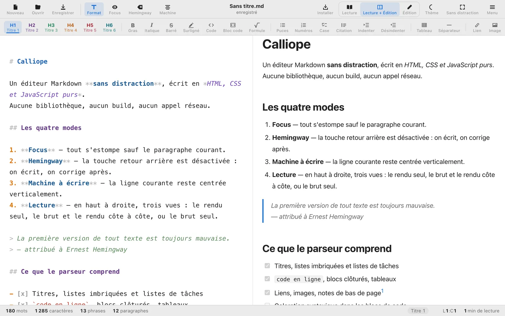
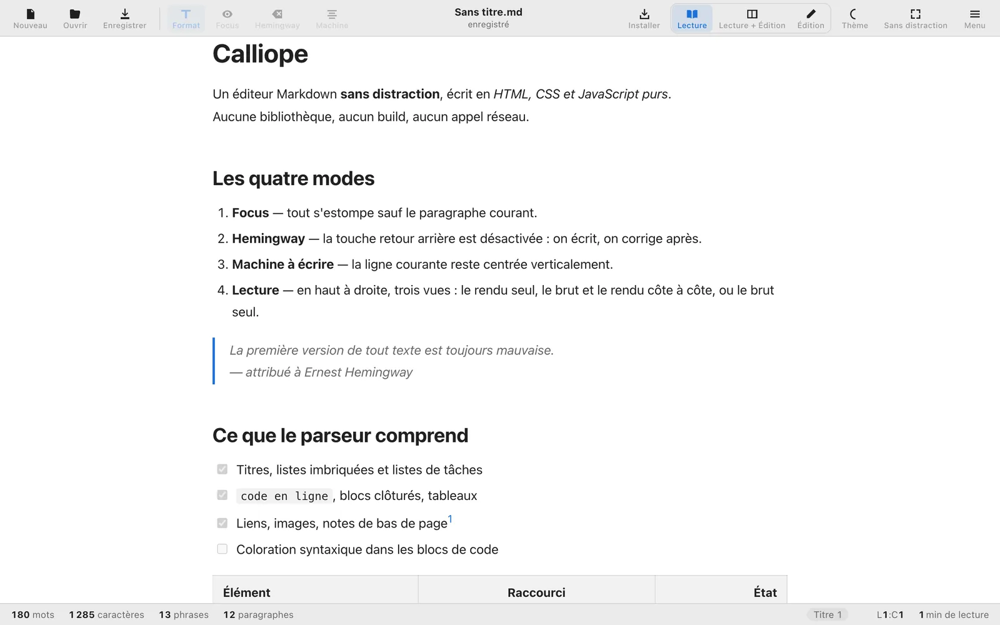
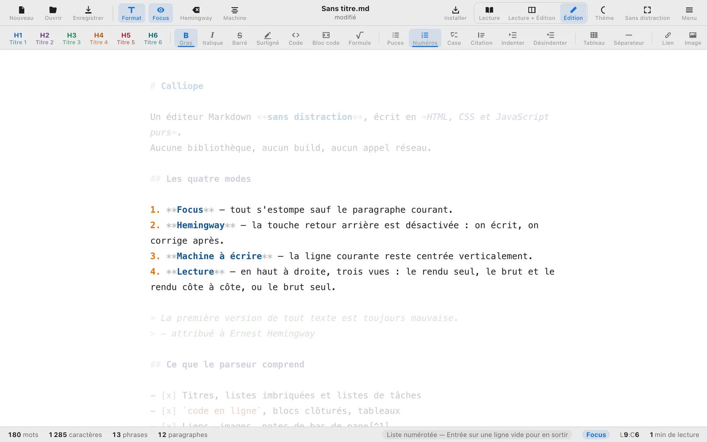
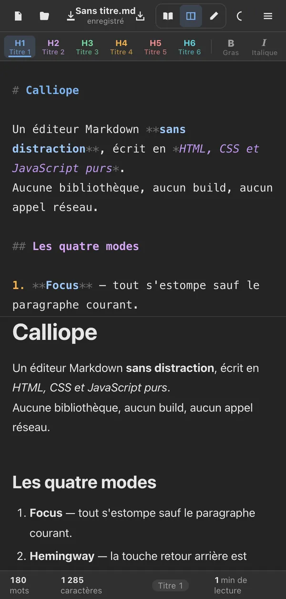

Calliope
Écrire en Markdown, sans distraction
Calliope est un éditeur de texte Markdown sobre qui fonctionne entièrement dans votre navigateur. Rien à télécharger, rien à inscrire : le lien ouvre l’éditeur et vous écrivez dans la seconde.
- Hors ligne
- Sans compte
- Un seul fichier
- Libre (MIT)
- Version 1.2.1

Comment ça marche
- Ouvrez le lien. L’éditeur s’affiche aussitôt, sans installation ni inscription.
- Écrivez en Markdown. La barre de mise en forme insère titres, gras, listes, tableaux, liens, images ou notes de bas de page ; chaque bouton indique son raccourci clavier. Une couleur distingue chaque niveau de titre.
- Choisissez votre vue. Lecture affiche le document mis en forme, sans aucun signe Markdown. Lecture + Édition montre le texte brut et le rendu côte à côte. Édition garde le texte brut seul.
- Choisissez votre façon d’écrire. Focus estompe tout sauf le paragraphe en cours, Hemingway désactive le retour arrière, Machine à écrire garde la ligne courante au centre de l’écran.
- Enregistrez ou exportez. Ouvrez et enregistrez des fichiers
.md; sur Chrome et Edge, le fichier est réécrit en place. Exportez en page HTML autonome ou en PDF.


Ce que vous pouvez faire
- Écrire sans distraction Le mode plein écran (F11) ne laisse que le texte à l’écran.
- Ne rien perdre Sauvegarde automatique locale : rien n’est perdu si l’onglet se ferme. La liste des documents récents vous ramène à votre travail.
- Régler l’affichage Quatre thèmes (clair, sombre, nuit bleue, sépia), choix de la police, de la taille et de la largeur de colonne.
- Emporter l’éditeur Tout Calliope tient dans un seul fichier HTML. Copiez-le sur une clé USB : il s’ouvre d’un double-clic, sans connexion.
- Écrire riche Cases à cocher, citations, tableaux, notes de bas de page et formules.
- Travailler avec un assistant IA Un assistant qui pilote le navigateur peut lire et écrire dans Calliope ; son mode d’emploi est publié.

L’installer comme une application
| Appareil | Comment faire |
|---|---|
| Chrome, Edge (ordinateur) | Bouton Installer de Calliope, ou icône d’installation dans la barre d’adresse. |
| Android | Bouton Installer, ou menu du navigateur, puis Ajouter à l’écran d’accueil. |
| iPhone, iPad | Safari, bouton Partager, puis Sur l’écran d’accueil. |
| Mac (Safari, macOS 14 et plus) | Menu Fichier, puis Ajouter au Dock. |
Une fois installée, Calliope fonctionne hors ligne et se met à jour d’elle-même quand une nouvelle version est publiée. Ouverte par double-clic depuis un fichier téléchargé, elle fonctionne pleinement mais ne s’installe pas : les navigateurs réservent l’installation aux sites en ligne.
Vos textes restent chez vous
- Aucun compte Aucune inscription, aucun identifiant.
- Aucun serveur Vos textes ne quittent jamais votre appareil.
- Aucun pistage Ni publicité, ni cookie tiers, ni mesure d’audience.
- Un seul échange réseau Le chargement de l’application elle-même. Ensuite, tout se passe sur votre machine.
En bref
- Version
- 1.2.1
- Plateformes
- Tout navigateur récent sur ordinateur, Android, iPhone et iPad ; installable comme application
- Fonctionnement
- Hors ligne, sans compte, sans serveur, sans dépendance
- Fichiers
- Markdown (
.md) ; export HTML et PDF - Licence
- Libre (MIT) — code source sur GitHub
Une idée pour Calliope ?
Un défaut, une amélioration : écrivez-nous en précisant votre navigateur et, si possible, le texte qui pose problème.